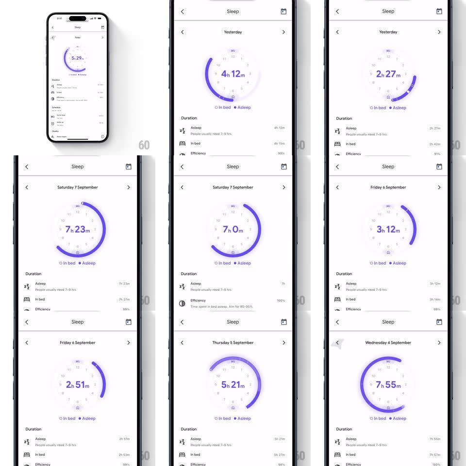

Media
Frame-by-frame

Rebuild this animation 1:1: Google Fit's sleep clock ring - swiping between days morphs a purple arc around a dotted clock-face dial, sweeping it to that day's sleep window while the center duration counts to the new value.

Rebuild this animation 1:1: Google Fit's sleep clock ring - swiping between days morphs a purple arc around a dotted clock-face dial, sweeping it to that day's sleep window while the center duration counts to the new value.
## Integration
Integration: stack-agnostic spec - springs given as stiffness/damping, timed motions as duration + curve; map every value to your framework and animation library of choice.
## Scene
Sleep detail: day pager header ("Yesterday", "Saturday 7 September"...), a circular clock dial (dotted hour marks, bedtime/wake icons), a purple arc tracing the sleep window, big center duration ("7h 23m"), legend (In bed / Asleep), Duration stat rows below.
## Motion spec
Pattern: day-pager ring morph.
- Swipe (or tap arrows) between days: the whole dial crossfades slightly (150ms) while the purple arc sweeps from the old window to the new one - both endpoints travel along the circle (450ms, ease-in-out), passing through the shorter rotational path.
- Center duration counts up/down digit-roll style to the new value (400ms); hour and minute units stay fixed.
- The bedtime/wake marker dots ride the arc's endpoints during the sweep.
- Stat rows below (Asleep, In bed, Efficiency) crossfade their values (250ms) after the ring lands.
- Header day label slides horizontally with the swipe direction (200ms).
## Calibration
- The arc represents clock time (bedtime to wake) - endpoints must land on the correct hour marks.
- Arc sweeps clockwise through the night (across 12), never backwards through the day side.
## Reduced motion
Arc snaps to the new window with a fade; numbers swap without rolling.
## Don't miss
- The dial is dotted/minimal - the purple arc is the only heavy element.
- "Asleep" (solid purple) vs "In bed" (outline) legend distinction carries into the arc's styling.